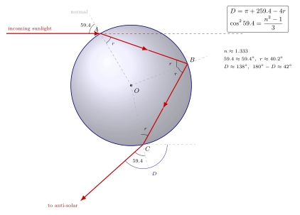

彩虹为什么总挂在太阳对面 42°?
夏天下过阵雨, 云层散去, 你背对太阳望向雨帘, 一道弧形的七色带悬在空中. 把手指朝太阳对面伸出去——那个"反日点"总在你头部的阴影尖端附近——再抬头量一量, 这道弧从反日点张开的半角总在 42° 左右. 换一场雨、换一个国家、甚至换一个时代, 都是同一个数. 为什么?
更奇怪的是, 这弧的红总在外、紫总在内, 颜色次序从不颠倒; 有时它外侧还叠加一条暗得多、而且颜色次序相反的副虹——民间称作"霓". 42° 这个数, 以及颜色的排列, 都不是经验性规律, 而是斯涅尔定律加上"求极值"这一几何操作的直接后果. 上一节我们从费马原理推出了折射的本质, 这一节我们要把斯涅尔定律搬进一个球形水滴, 看几何怎样把光线揉成一道弧.
一、一滴水里发生的三件事
把一滴雨想成一个半径为 $R$ 的理想球. 阳光从远处平行地射来, 我们随便挑一条光线, 它以撞击参数 $b$ 偏离球心水平地打在球面上的 $A$ 点. 由于球面上任一点的法线都沿径向, 入射角 $\theta$ 满足 $\sin\theta = b/R$——参数 $b$ 和入射角 $\theta$ 一一对应, 我们直接以 $\theta$ 作自变量.
光线在 $A$ 点做了第一件事: 折射进入水中. 记水中折射角为 $r$, 斯涅尔定律给出约束
$$ \sin\theta = n \sin r, \qquad n \approx 1.333. \tag{1} $$
折射之后, 光线在水滴内部直行, 撞到后壁上的某点 $B$. 由于 $OA = OB = R$, 三角形 $OAB$ 是等腰的, 在 $B$ 点的入射角同样是 $r$. 光线做第二件事: 在 $B$ 点发生部分内反射——注意是内反射, 并非全反射, 反射系数只有百分之几, 彩虹其实相当暗淡. 反射后光线再直行一段, 撞到前壁上的 $C$ 点, 同样因为 $OB = OC = R$, 三角形 $OBC$ 等腰, $C$ 处从内部看出去的入射角仍是 $r$.
在 $C$ 点光线做第三件事: 再次折射, 穿回空气. 由互逆性, 空气侧的折射角又回到 $\theta$. 三段操作完成, 光线离开水滴, 奔向无穷远.
现在的问题是: 从 $A$ 到 $C$, 光线相对于入射方向一共转了多少度? 把入射方向取成水平向右, 出射方向总会与它成一个夹角, 我们把这条折返的总偏转角记作 $D(\theta)$.
一段段算: 在 $A$ 处折射, 原本水平的射线被扳向法线, 相对原方向偏了 $\theta - r$ (因为若不折射它会继续水平; 折射后它朝法线内侧偏 $\theta-r$). 在 $B$ 处内反射, 相对入射路径又偏了 $\pi - 2r$ ($\pi$ 是"原路返回", 减去两倍的入射角才是真正的反射方向). 在 $C$ 处出射折射, 和 $A$ 点对称, 再偏 $\theta - r$. 三段加起来:
$$ D(\theta) = (\theta - r) + (\pi - 2r) + (\theta - r) = \pi + 2\theta - 4r. \tag{2} $$
式 (1) 是约束, 式 (2) 是目标. 这两个公式加起来, 就是整张彩虹的全部物理. 剩下的只是数学.

二、为什么 42° 这个数会"站出来"?
你也许要问: $D(\theta)$ 是 $\theta$ 的连续函数, 不同的入射角 $\theta$ (也就是不同的撞击参数 $b$) 应该给出不同的出射方向. 那每滴水里出来的光岂不是散成一扇? 为什么偏偏在 42° 聚成一条清晰的弧?
关键在于: 阳光并不只挑一条光线射入水滴——撞击参数 $b$ 从 $0$ 到 $R$ 每一个值都有光线照进. 所以每一滴水其实朝四面八方都散出光来. 但是"散出的强度", 也就是出射方向附近聚集的光线密度, 并不均匀. 某个方向上, 不同撞击参数的光线全都扎堆涌向它——那就是彩虹所在的方向.
数学上的表达很干净: 如果 $\theta$ 稍稍变化 $d\theta$, 对应的出射方向变化 $dD$. 当 $dD/d\theta \neq 0$, 出射方向随 $\theta$ 线性散开, 光强被摊开; 但如果在某个 $\theta^*$ 处 $dD/d\theta = 0$, 那么 $\theta$ 的一大片邻域都被映射到几乎同一个出射方向——这就是"极值奇点". 光线在此方向上堆积, 形成亮度集中, 观察者看到的就是这道弧. 这和几何光学里"焦散"(caustic) 是同一类现象.
所以我们要做的是, 对式 (2) 求 $\theta$ 的导数并置零. 由 (1) 两边对 $\theta$ 微分, 得 $\cos\theta = n \cos r \cdot \frac{dr}{d\theta}$, 即 $\frac{dr}{d\theta} = \frac{\cos\theta}{n\cos r}$. 把它代入 $\frac{dD}{d\theta} = 2 - 4\frac{dr}{d\theta} = 0$, 得到
$$ n \cos r = 2 \cos\theta. \tag{3} $$
这是极值条件. 可它还带着 $r$, 不够干净. 把 (1) 平方 $\sin^2\theta = n^2 \sin^2 r$, 再把 (3) 平方得 $n^2 \cos^2 r = 4\cos^2\theta$. 利用 $\sin^2 r + \cos^2 r = 1$, 两式相加:
$$ \sin^2\theta + 4\cos^2\theta = n^2. $$
再用 $\sin^2\theta = 1 - \cos^2\theta$ 化简:
$$ 1 + 3\cos^2\theta = n^2 \quad\Longrightarrow\quad \boxed{\cos^2\theta = \frac{n^2 - 1}{3}}. $$
这就是 1637 年笛卡儿在《气象学》中第一次严格推得的彩虹公式. 它把"为什么是 42°"归约为"$n$ 是多少". 一滴水的全部秘密, 压缩成一个平方余弦等于 $(n^2-1)/3$.
三、代入水的折射率, 看 42° 如何落地
水对可见光中段 (黄绿) 的折射率取 $n = 1.333$. 我们来一步步代入.
首先 $n^2 = 1.333^2 = 1.777$. 所以
$$ \cos^2\theta = \frac{1.777 - 1}{3} = \frac{0.777}{3} = 0.2590. $$
$\cos\theta = \sqrt{0.2590} = 0.509$, 于是 $\theta = \arccos 0.509 \approx 59.4^\circ$. 这就是极值处的入射角——也就是所有同向打入的平行光里, 最善于"扎堆出射"的那条光线, 距离球心的撞击参数为 $b = R \sin 59.4^\circ \approx 0.861\,R$, 挺靠边的.
再由斯涅尔定律 (1): $\sin r = \sin 59.4^\circ / 1.333 = 0.861 / 1.333 = 0.646$, 故 $r = \arcsin 0.646 \approx 40.2^\circ$.
代入式 (2):
$$ D_{\min} = 180^\circ + 2 \times 59.4^\circ - 4 \times 40.2^\circ = 180^\circ + 118.8^\circ - 160.8^\circ = 138.0^\circ. $$
所谓"总偏转 138°"意思是出射方向相对入射方向转了 138°. 但彩虹是我们站在太阳背面抬头看的, 把视线从反日点指向水滴, 这条视线与入射阳光夹角就是 $180^\circ - D_{\min} = 42.0^\circ$. 这就是那个天文教材里引以为傲的数. 我们从斯涅尔定律开始, 只用了一次求导, 就让它自己落了地.
现在把色散加进来. 不同频率的光在水里折射率不同: 红光端 $n_{\text{红}} \approx 1.331$, 紫光端 $n_{\text{紫}} \approx 1.344$. 代入彩虹公式:
- 红光: $\cos^2\theta = (1.331^2 - 1)/3 = 0.7715/3 = 0.2572$, $\theta \approx 59.5^\circ$, $r \approx 40.3^\circ$, $D_{\min} \approx 137.6^\circ$, 虹角 $\approx 42.4^\circ$.
- 紫光: $\cos^2\theta = (1.344^2 - 1)/3 = 0.8063/3 = 0.2688$, $\theta \approx 58.8^\circ$, $r \approx 39.6^\circ$, $D_{\min} \approx 139.4^\circ$, 虹角 $\approx 40.6^\circ$.
红光虹角比紫光大约 $1.8^\circ$——这就是彩虹的宽度. 红在外、紫在内的次序, 其实是因为 $n$ 越大 $\cos^2\theta$ 越大 (记住 $n^2-1$ 在分子上), $\theta$ 越小, 虹角也越小, 紫光就被"挤"到内圈去. 这点牛顿在 1666 年的棱镜实验后写进了他的《光学》, 用色散把笛卡儿的几何图补全了颜色.
四、霓、极限与两个历史人的接力
如果你足够幸运, 在主虹外侧大约再高 9° 的位置, 会看到一条更暗、颜色次序倒过来的副虹, 中文叫霓. 它来自同一颗水滴, 只是光线在后壁做了 两次 内反射才出来. 仿造前面的推导, 总偏转变成
$$ D_2(\theta) = 2\theta - 6r + 2\pi, $$
对它求极值, 最终得到 $\cos^2\theta = (n^2 - 1)/8$. 用 $n = 1.333$ 代入, 算出虹角约 51°, 正是霓所在的位置. 关键的倒转: $D_2$ 的极小对应的视角更大, 而且红紫之间关系翻过来——紫在外、红在内. 副虹更暗, 是因为每多一次内反射要再损一次透射, 强度掉到主虹的二三成左右.
我们还能对彩虹公式做一次极限检验. 想象水的折射率慢慢趋近 1——也就是水的光学性质越来越像空气, 比方说一颗"稀薄到几乎透明"的液滴. 这时 $\cos^2\theta = (n^2-1)/3 \to 0$, 意味着 $\theta \to 90^\circ$——入射光线必须几乎贴着水面才能参与极值. 但这时参与的光通量几乎为零, 而且同时 $r \to 90^\circ$, $D \to \pi + 2\cdot 90^\circ - 4\cdot 90^\circ = 0$. 总偏转归零, 光线几乎直穿, 彩虹消失. 这个极限告诉我们一件事: 彩虹的存在本身依赖于水与空气折射率之差——没有这个差, 就没有那道 42° 的弧. 这一点再次重申了彩虹是折射率 $n$ 的函数的属性.
最后交代一段接力赛. 1637 年, 笛卡儿在《方法谈》的附录《气象学》里第一次做出这张完整的推导: 他手算了 $10^4$ 条代表光线, 每条都用斯涅尔定律追踪到底, 把出射方向列成表, 在 42° 附近发现光线密度的峰值. 那时他还没有微积分工具, 用的是穷举近似——今天我们一步求导就能得到的结论, 他硬是用表格逼出来. 笛卡儿在这一节的推导里也顺带把副虹 51° 算了出来, 把数值与观测对得很准. 唯一没解决的是: 为什么是七色? 他不知道. 这一棒交给了三十年后的牛顿. 1666 年牛顿用三棱镜把白光分成一条彩色带, 证明白光是各色单色光的组合, 而每种单色光在水中有不同折射率. 把色散代进笛卡儿公式, 一个 $n$ 变成一束 $n(\lambda)$, 42° 就膨胀成了 40.6°–42.4° 的整条弧. 从此人们看彩虹, 就等于同时看到了三件事: 一次几何极值、一次斯涅尔折射、一次牛顿分光.
小结
彩虹不是画在天上的图案, 而是几何光学方程的一个极值奇点. 从斯涅尔定律 $\sin\theta = n\sin r$ 出发, 加上"总偏转 $D$ 在某个入射角取极值"这个自然的聚光条件, 我们推得笛卡儿公式 $\cos^2\theta = (n^2-1)/3$, 代入水的 $n = 1.333$ 立刻得到 42°. 让 $n$ 随波长微变, 色散就把单一角度撑成七色之带. 这道弧之所以让我们难忘, 正是因为它把前一节的斯涅尔定律推到一个看得见、摸得着、连小孩都能指认的几何事实上去——光不是神秘之物, 它只是沿着"最节省时间"的路径走, 而当众多这样的路径碰巧聚拢, 天空就给你画一道弧. 下一节我们把视角从液滴切换到整块大气: 当折射率不再是分段常数, 而是随高度连续变化, 光会怎样把远处的物体"抬起来"或者"压下去"?
▲